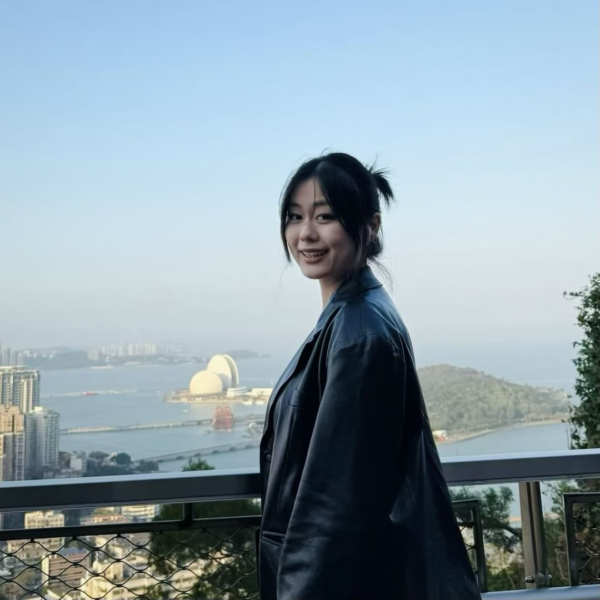
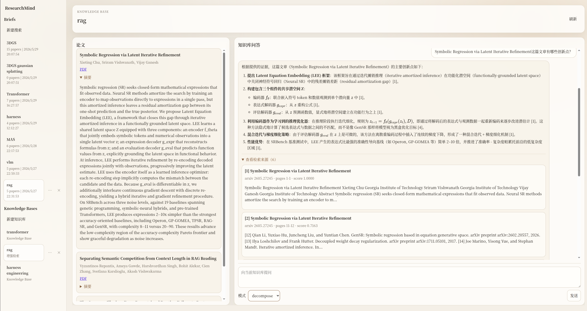
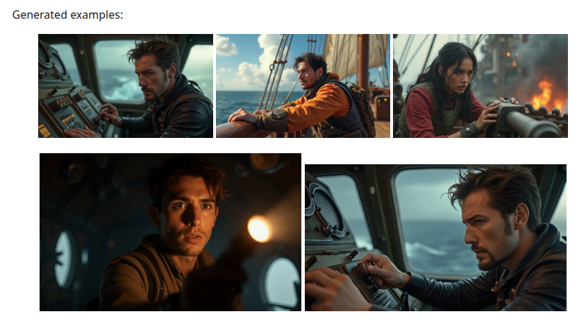

腾讯 · AI 产品实习
参与游戏 AIGC 资产生产平台 GamePilot 与资产管理平台 ArtFlow 联合建设，负责多模态模型评测与接入、基于无限画布的 Chat Agent 产品方案，以及多模态资产自然语言检索策略优化。
AI Product Manager · Agent / AIGC / RAG
我是王田田，上海大学计算机科学与技术硕士在读（2028 届），现于腾讯参与游戏 AIGC 资产生产与管理平台建设。
我关注模型能力如何转化为可用的 AI 产品，经历覆盖多模态模型评测、Agent 与 Skills 体系、RAG、Text2SQL 和 AIGC 工作流，能够从场景判断、方案设计、POC 验证到评测迭代推动产品落地。

Vibe Coding项目
面向科研阅读与资料沉淀的本地论文知识库工作台。项目将论文搜索、PDF 入库、多模态分块、Hybrid Retrieval、Rerank 与带引用问答串联为完整流程，帮助使用者把零散论文转化为可检索、可追问、可溯源的个人研究知识库。

个人科研专项
面向 AI 短剧创作的多智能体生成系统。项目将故事描述拆解为故事摘要、角色设定、场景规划、镜头设计、关键帧生成、视频生成与后期拼接等阶段，通过 Agent Workflow 编排提升复杂内容生成任务的结构化程度，并围绕角色一致性设计角色库与生成校验闭环。

参与游戏 AIGC 资产生产平台 GamePilot 与资产管理平台 ArtFlow 联合建设，负责多模态模型评测与接入、基于无限画布的 Chat Agent 产品方案，以及多模态资产自然语言检索策略优化。
负责智能体平台 ChatBI 模块的产品设计与落地，串联语义层、知识检索、业务规则、SQL 生成与校验链路；参与 Agent 编排并推动 Skills 广场从 0 到 1 建设。
通过多阶段 Agent Workflow 将短剧创作拆解为剧本、角色、场景、镜头与视频生成链路，并围绕角色一致性建立角色库、身份注入和生成校验闭环。
研究方向为 Agent for AIGC，关注智能体在图像修复、图像编辑、视频生成等 AIGC 任务中的应用。
完成智能客服与 AI 文书工作台的场景定义、交互原型及 POC 验证，搭建 5+ 项 Dify 工作流，形成文书生成与二次编辑闭环。
参与 AI 绘画云平台“巨人摹境”建设，开展游戏美术场景调研、模型评测及工作流设计，落地 20+ 项 ComfyUI 工作流与 LoRA 模型广场方案。
上海市奖学金、计算机应用能力大赛二等奖、计算机设计大赛三等奖。
Agent 产品设计 / Skills 与 Workflow 体系 / RAG 与知识库方案 / Prompt 与 Context Engineering
多模态模型评测与选型 / Agent 评测 / Bad Case 归因 / 检索策略 / 指标体系
AI 辅助开发与 POC 验证 / Dify / ComfyUI / Figma / Python / SQL / React
关注 Agent、AIGC 与企业智能体方向的 AI 产品机会，也欢迎围绕相关产品实践交流。